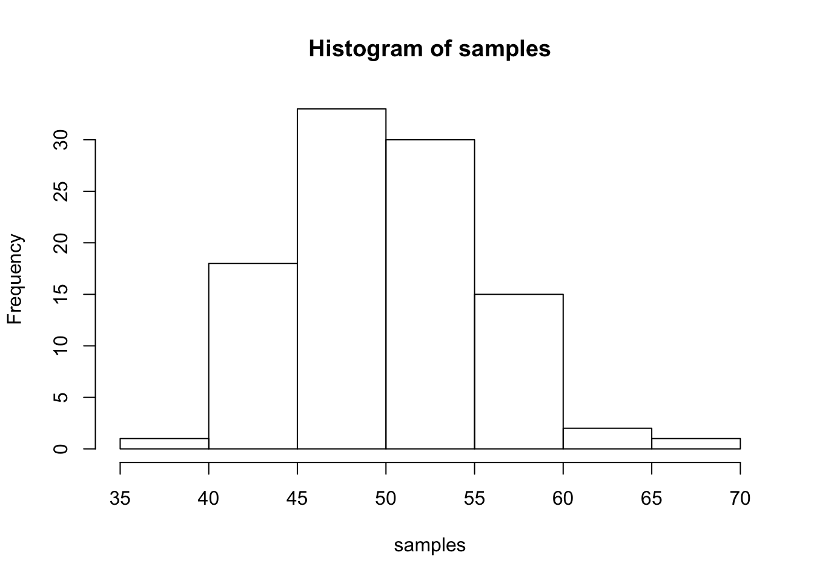

This is the heart of my online journal where i will be working through problems provided by the instructor as well as practicing code on my own.
Histogram
samples<- rnorm(100, mean=50, sd=5)
hist(samples)
Rent of $750 for 12 months added using a loop
b<-length(12)
for(j in 1:12){
b[j]<-750
}
c<- sum(b)
print(c)## [1] 9000Average function
2+3## [1] 512-7## [1] 55*3## [1] 1525/2.5## [1] 10x<- 22
y<- 4
z<- 6
x-y## [1] 18y*z## [1] 24a<- length(100)
for(i in 1:100){
a[i]<- i
}d<-seq(1,100,1)
print(d)## [1] 1 2 3 4 5 6 7 8 9 10 11 12 13 14 15 16 17
## [18] 18 19 20 21 22 23 24 25 26 27 28 29 30 31 32 33 34
## [35] 35 36 37 38 39 40 41 42 43 44 45 46 47 48 49 50 51
## [52] 52 53 54 55 56 57 58 59 60 61 62 63 64 65 66 67 68
## [69] 69 70 71 72 73 74 75 76 77 78 79 80 81 82 83 84 85
## [86] 86 87 88 89 90 91 92 93 94 95 96 97 98 99 100print(sum(d))## [1] 5050sum_of_integers<-function(e,f){
return (sum(seq(e,f,1)))
}
sum_of_integers(8,99)## [1] 4922odd<-seq(1,100,2)
print(odd)## [1] 1 3 5 7 9 11 13 15 17 19 21 23 25 27 29 31 33 35 37 39 41 43 45
## [24] 47 49 51 53 55 57 59 61 63 65 67 69 71 73 75 77 79 81 83 85 87 89 91
## [47] 93 95 97 99for (k in 3:1000){
prime<-TRUE
for (x in 2:k-1){
if(k %% x==0){
prime<-FALSE
}
}
if(prime == TRUE){
print(k)
}
}randnum<- sample(100)
randnum## [1] 96 26 14 62 52 89 22 23 84 100 58 60 59 9 41 45 99
## [18] 49 28 47 50 40 74 43 79 38 88 13 16 85 31 46 56 17
## [35] 65 81 53 6 15 57 72 7 39 5 21 75 8 91 44 1 20
## [52] 87 12 71 93 51 30 61 37 90 25 36 67 4 80 70 33 18
## [69] 83 69 92 29 73 97 77 54 95 32 78 48 76 82 11 42 98
## [86] 86 19 63 34 66 10 35 3 27 24 68 55 94 64 2randrange<- sample(1:25,100,replace=T)
randrange## [1] 25 19 18 2 21 8 6 24 22 15 6 22 25 15 20 16 25 11 6 20 6 8 7
## [24] 24 8 19 14 10 10 4 19 12 4 25 8 8 13 8 18 19 5 20 19 25 20 7
## [47] 15 7 9 2 7 24 11 12 6 15 8 9 1 17 2 10 18 8 9 16 7 19 20
## [70] 3 22 7 24 5 17 19 19 17 15 20 10 3 23 17 19 12 3 25 14 19 1 20
## [93] 4 5 19 4 20 1 14 11Write your own functions to give descriptive statistics for a vector variable storing multiple numbers. Write functions for the following without using R intrinsics: mean, mode, median, range, standard deviation.
Count the number of characters in a string variable.
Count the number of words in a string variable.
Count the number of sentences in a string variable.
Count the number of times a specific character occurs in a string variable.
Do a logical test to see if one word is found within the text of another string variable.
Put the current computer time in milliseconds into a variable.
Measure how long a piece of code takes to run by measuring the time before the code is run, and after the code is run, and taking the difference to find the total time.
Read a .txt file or .csv file into a variable.
Output the contents of a variable to a .txt file.
Create a variable that stores a 20x20 matrix of random numbers.
Output any matrix to a txt file using commas or tabs to separate column values, and new lines to separate row values.
The FizzBuzz Problem. List the numbers from 1 to 100 with the following constraints. If the number can be divided by three evenly, then print Fizz instead of the number. If the number can be divided by five evenly, then print Buzz instead of the number. Finally, if the number can be divided by three and five evenly, then print FizzBuzz instead of the number.
Frequency Counts Take text as input, and be able to produce a table that shows the counts for each character in the text. This problem is related to the earlier easy problem asking you to count the number of times that a single letter appears in a text. The slightly harder problem is the more general version: count the frequencies of all unique characters in a text.
Test the Random Number Generator Test the random number generator for a flat distribution. Generate a few million random numbers between 0 and 100. Count the number of 0s, 1s, 2s, 3s, etc. all the way up to 100. Look at the counts for each of the numbers and determine if they are relatively equal. For example, you could plot the counts in Excel to make a histogram. If all of the bars are close to being flat, then each number had an equal chance of being selected, and the random number generator is working without bias.
Create a multiplication table Generate a matrix for a multiplication table. For example, the labels for the columns could be the numbers 1 to 10, and the labels for the rows could be the numbers 1 to 10. The contents of each of the cells in the matrix should be correct answer for multiplying the column value by the row value.
Encrypt and Decrypt the Alphabet Turn any normal english text into an encrypted version of the text, and be able to turn any decrypted text back into normal english text. A simple encryption would be to scramble the alphabet such that each letter corresponds to a new randomly chosen (but unique) letter.
Snakes and Ladders. Your task here is to write an algorithm that can simulate playing the above depicted Snakes and Ladders board. You should assume that each roll of the dice produces a random number between 1 and 6. After you are able to simulate one played game, you will then write a loop to simulate 1000 games, and estimate the average number of dice rolls needed to successfully complete the game.
Dice-rolling simulations. Assume that a pair of dice are rolled. Using monte carlo-simulation, compute the probabilities of rolling a 2, 3, 4, 5, 6, 7, 8, 9, 10, 11, and 12, respectively.
Monte Hall problem. The monte-hall problem is as follows. A contestant in a game show is presented with three closed doors. They are told that a prize is behind one door, and two goats are behind the other two doors. They are asked to choose which door contains the prize. After making their choice the game show host opens one of the remaining two doors (not chosen by the contestant), and reveals a goat. There are now two door remaining. The contestant is asked if they would like to switch their choice to the other door, or keep their initial choice. The correct answer is that the participant should switch their initial choice, and choose the other door. This will increase their odds of winning. Demonstrate by monte-carlo simulation that the odds of winning is higher if the participant switches than if the participants keeps their original choice.
100 doors problem. Problem: You have 100 doors in a row that are all initially closed. You make 100 passes by the doors. The first time through, you visit every door and toggle the door (if the door is closed, you open it; if it is open, you close it). The second time you only visit every 2nd door (door 2, 4, 6, etc.). The third time, every 3rd door (door 3, 6, 9, etc.), etc, until you only visit the 100th door.
Question: What state are the doors in after the last pass? Which are open, which are closed?
Where X and X-1 are replaced by numbers of course, from 99 all the way down to 0.